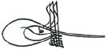

Sumatra adasındaki en büyük kilisenin çanı eski bir Türk topundan yapılmıştır ve üzerinde II. Selim’in tuğrası vardır. 1570 yılında Sumatra’dan gelen bir istek üzerine oraya gönderilen silahlar arasında Açe elçisinin II. Selim’e hediye olarak verdiği bir torba Sumatra biberine ithafen, ‘lada seçupak’ (bir torba biber) adlı dev top da bulunmaktaydı. Bu top 16’ıncı asırda Sumatra Müslümanlarına yardım için İstanbul’dan gönderilen Türk döküm ustaları tarafından orada dökülmüş, üzerine de bu ada Müslümanlarının Osmanlı’ya tabiiyetinin alâmeti olarak bu padişahın tuğrası konmuştu.

II. Selim’in Tuğrası